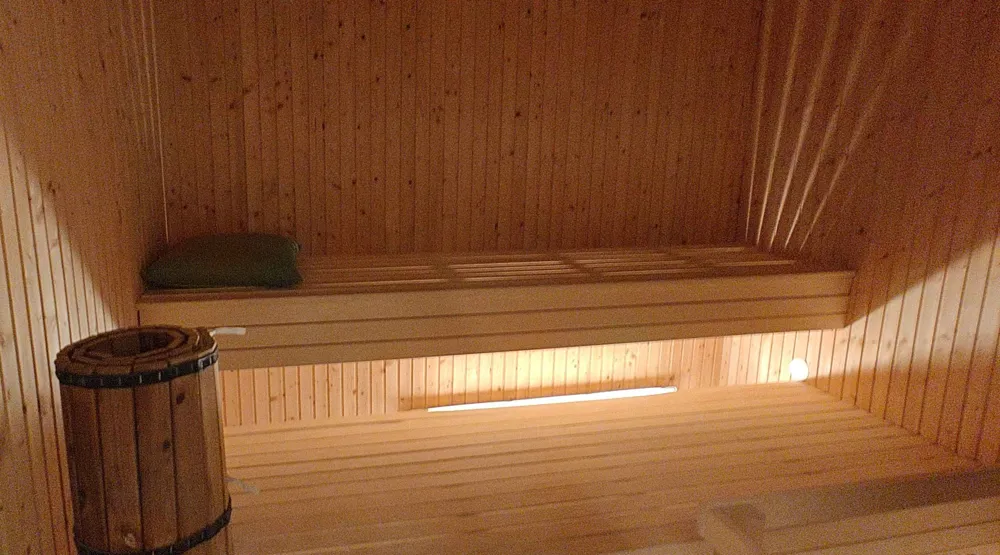

Östra gymnasiet

Löken undersöker Östras bastu
Löken har den senaste veckan genomfört en undersökning av det hemliga basturummet på skolan. Denna undersökning har varit mycket farlig och krävt mycket resurser av Löken. Men efter en lång jakt på sanningen, har vi äntligen tacklat den, strypt den, och avlivat den, så vi kan nu till slut säga: Sverige, vi har ett resultat!
Historien började en regnig kväll, med blixtar som dånade genom hela Skogås, in i varenda gängkriminells mediokert dränerade källare fylld med cannabis, kokain och k-pistar. Lökens reporter väntade utanför skolans mörka portar när en skugga tittade ut från bakom husknuten. Knuten var teglad med något missfärgat tegel från Bauhaus som enligt kol-14 metoden skulle vara tillverkat de senaste 100 åren. Missfärgningen berodde antagligen på att just den här knuten satt på solsidan av byggnaden, om det hade varit sol. Det var som sagt en ruggig och regnig kväll när skuggan kom fram och presenterade sig som Lökens mullvad i lärarstaben. Tyst tassade de förbi den sovande rektorn och upp till plan fyra samtidigt som de hörde någonting krossas i köket.
Till slut kom de fram. Lökens reporter bad om den djupaste analys mullvaden kunde frambringa och fick ett svar: "Ibland är det väldigt varmt här". Mullvaden satte på aggregatet och temperaturen ökade sakta men säkert. Bastuaggregatet hade fläckar på 2-5 cm med rost och verkade till synes bestå till största del av magnetit. Men precis när reportern skulle mäta temperaturen så hördes ett ljud: *klick-klick*. Butlern stod med en Winchester Model 1887, enligt glansigheten på pipans finish så såg den ut att vara en originalproduktion. Även märkningarna närmare pistolgreppet överensstämde med detta, då det stod att den var tillverkad 1893. Butlen sköt ett varningsskott, och både mullvaden och Lökens vettskrämda reporter rusade ut ur skolan tillbaka ut i det dånande ovädret och gick kuvade hem till sina mediokert dränerade källare. Dessvärre får vi aldrig veta vad temperaturen var i bastun den dagen.